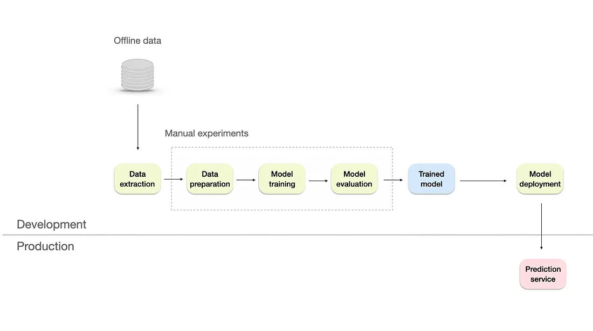
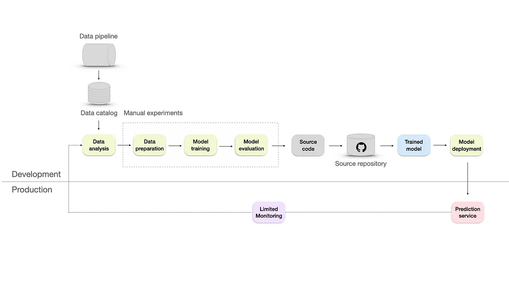
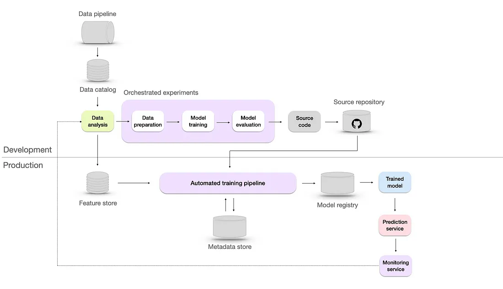
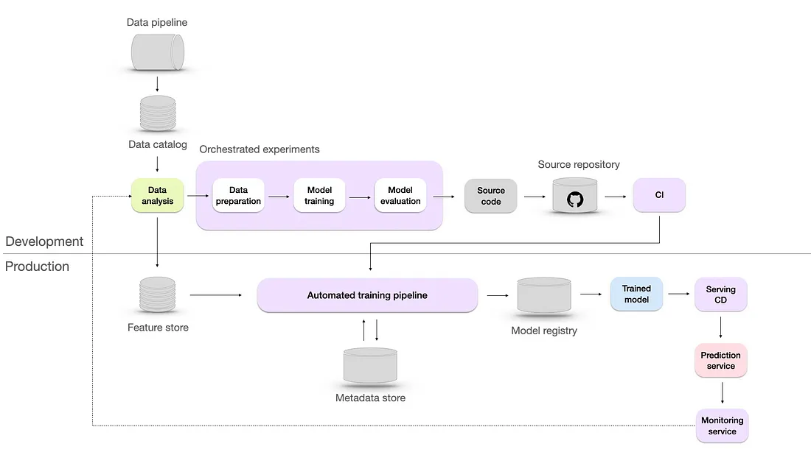
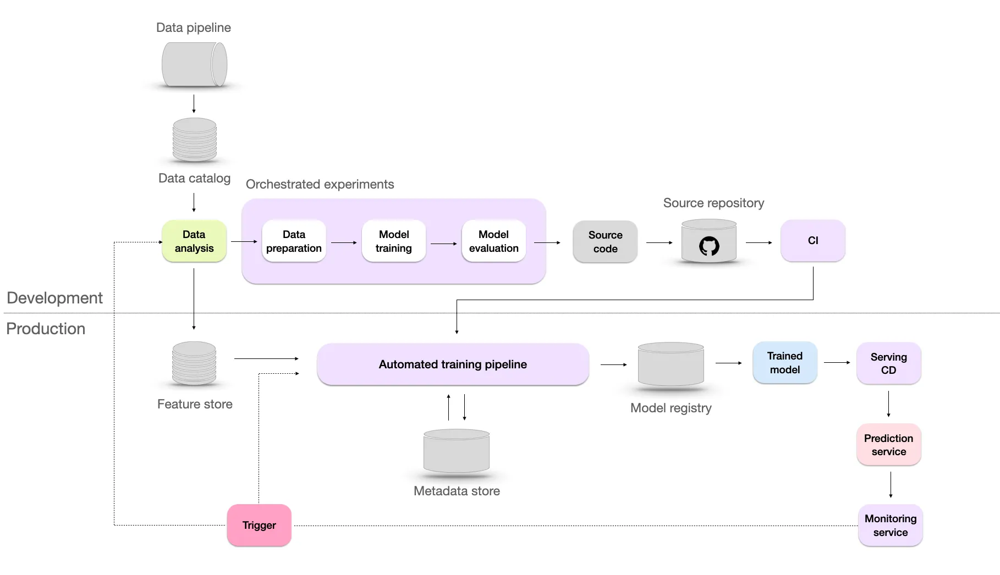
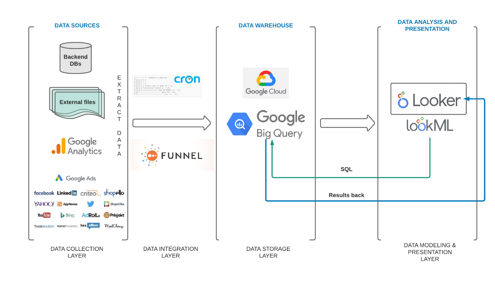
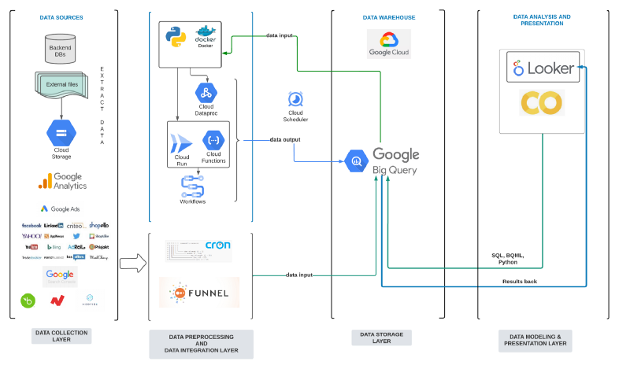

Development
Planning
Notes from
Resources
Questions
- What are your priorities and burning issues? — prioritize the use cases the data platform should resolve for you promptly, which can generate immediate business value.
- What are your constraints? — think and quantify everything — from software and human resources to time and effort required, level of internal knowledge, and monetary resources.
Goals
- Start with quick wins — don’t dive directly into data science and machine learning model development, but instead start with quick win use cases (usually descriptive statistic use cases).
- Be realistic — when setting the data platform goals, the important thing is to be realistic about what’s feasible to achieve given current constraints.
Components
- Building data pipelines — properly developed data pipelines will save you money, time, and nerves. Developing pipelines is the most crucial part of the development, i.e. that your pipelines are properly tested and deliver new data to business users without constant brakes due to various data and system exceptions.
- Organizing and maintaining the data warehouse — with the new data sources, a data warehouse can quickly become messy. Implement development standards and naming conventions for a better data warehouse organization.
- Data preprocessing — think about acquiring data preprocessing tool(s) as early as possible to improve the dashboard performance and reduce computational costs by de-normalizing your datasets.
- Data governance and security — set the internal standards and data policies on the data lifecycle (data gathering, storing, processing, and disposal).
Qualities for a machine learning model in production
- Reliability - ML systems will ultimately fail in some cases. Knowing how they fail and understanding their weaknesses is deeply tied with their reliability. One common way for companies to assess reliability of an ML model is to introduce an human in the loop first, in a testing stage.
- Scalability - Ideally we would like our algorithms to scale fast. You need to develop machine learning models that can handle possibly hundred of thousands of requests without even blinking. For some organizations, these types of scalable processes are just not there — in the end, they blame ML, when the reality is that most of their IT processes don’t scale at all.
- Maintainability - This tends to fail when companies just have data scientists develop the typical notebook that is dependent on a single machine or a single person. “It works on my machine” is a common saying amongst developers, that gets special difficult to overcome in the context of ML.
- Adaptability - Reaching this stage indicates a mature level of ML implementation, where models can be quickly retrained or applied to different scenarios and problems.
Checklist
- Misc
- If you’re using database for cross-validation splits, make sure the correct order of data is maintained by making sure a logic to sort or keep the ordering of data is set.
- Notes From:
- Broad strokes
- a way to ingest data for training
- a way to ingest data for prediction
- a place to output the predictions
- a place to train the model (a machine)
- some insight into what the process is doing: logging
- notifications to the right people when something goes wrong: alerting
- More finely grained
- lintr run / all probs fixed on model-related code
- Model can be run independently (single R file)
- Sign-off from engineering on model input / output / purpose
- Code review
- Algorithm review
- Standardized headers in R file that describe input, output, data, algorithm, description
- Code in Bitbucket
- All acceptance criteria are met
- Model validation documented
- Model validation review meeting held
- Self-Explanatory
- The more self-explanatory the data product is, the easier it will be to support future users and maintain by future developers. Data Inputs:
- Is the data I am using well-documented?
- Am I using the data in line with its intended use?
- Am I reusing as much of the existing engineering pipeline as possible to lower overall maintenance effort and ensure that my use is consistent with other uses of the same data items? Pipeline:
- Are the requirements, constraints and implementation of the data process documented well enough that someone else who may be taking over maintenance from me can understand it? Final Product:
- Is the report or dashboard presented in a way that is easily accessible and understandable even to people who will be viewing it, and without explanation from me?
- Am I using vocabulary and visualizations that the end user understands, and that they understand in exactly the same way I do?
- Am I providing good supporting documentation and information in a way that is intuitive and easily accessible from the data product itself?Data Inputs: Trustworthy
- Trust is hard to gain and easy to lose. Usually, when you first deliver a data product, there is a lot of hope and some trust. Data Inputs:
- Am I connected into the input data in a way that is well-supported in the production pipeline?
- Do I have explicit buy-in from those maintaining the data sets I am using?
- Is this input data likely to be maintained for a significant time in the future?
- When might I need to check back to be sure the data is still being maintained?
- How do I report any problems that I see in the input data?
- Who is responsible for notifying me of issues with the data?
- Who is responsible for fixing those issues? Pipeline:
- Have I set up a regular schedule to review the data and report to ensure that the data pipeline is still functioning well and the report is conforming to the requirements?
- What are the conditions under which this report should be marked as deprecated?
- How can I ensure that the user is informed should the report become deprecated? Final Product:
- How does the user know when they can trust the report is accurate and up to date?
- Is there an efficient and/or automated way of communicating possible problems to the end user?
- Is there a clear and accessible process in place for the user to report concerns with the data or report, and for the user to be notified of any remediation processes in place? Adaptable
- Data inputs and shapes change over time. In addition to monitoring relevant issues, when someone notices a problem, you need to be set up to react and formulate a solution without undue complications. Data Inputs:
- What features in the input data am I depending on for my analysis?
- How will I know if those features stop being supported, are affected by a schema change, or change shape in a way that may affect my analysis?
- How will I know if the scale of the data grows to a point where I need to refactor my process in order to keep up with my product’s requirements for freshness? Pipeline:
- Have I set up a regular schedule for re-examining the requirements to ensure that I am still producing what the user needs and expects?
- What is the process for users to indicate changes in requirements, and for those changes to be addressed?
- What is the process for refactoring and retesting the data pipeline when the inputs change in some relevant way? Final Product:
- Is the product or report set up in a way that it is easy to request a change and/or a new feature? Reliable
- Ensure that the different parts that make up your pipeline are reliable and the processes that orchestrate those parts are robust. Data Inputs:
- Does my process fit well into the data practices and engineering production system in my organization?
- Do I have an automatic notification system in place to monitor the availability, freshness and reliability of my input data? Pipeline:
- Is each stage in my pipeline executing and completing in a timely manner?
- Is there drift in the processing time and/or amount of data being processed at any stage that may indicate a degradation in pipeline function? Final Product:
- Who is responsible for the ongoing monitoring, reviewing, troubleshooting, and maintenance of the dashboard itself?
- Are responsibilities and procedures clearly in place for reporting and resolving issues internally?
- The more self-explanatory the data product is, the easier it will be to support future users and maintain by future developers. Data Inputs:
Documentation
- Model / architecture selection
- Hyper-parameters
- Rough description of the data (origin, size, date, features…)
- Results (ie: precision, recall, f1…).
- A link to a snapshot of data (if possible)
- Commentary and learnings
- Models
- model object, training, testing data
- Model name and description (origin, goal, size, date, features…)
- Development stage (Implemented for use, under development or recently retired)
- Diagnostic Metrics
- Model assumptions
- Model limitations
- The model owner: the model owner is responsible for ensuring that the models are appropriately developed, implemented and used.
- The model developers: model developers follow the lead of the model owner to create and implement the Machine Learning models.
- The model users: model users can be either internal to the business or external. For both cases it is important to clearly identify their needs and expectations. They should also be involved in the model development and can help validate the model’s assumptions.
- Other comments
- What was learned
- Projects
- An introduction
- A description of the problem
- A description of the data set
- The methodology that you used:
- Methodology to prepare the data
- Machine Learning / statistical analysis approach taken to achieve the results
- The Results
- Recommendations based off the results
Levels of Maturity
- From 5 Levels of MLOps Maturity
- Author’s recommendations based on reading Google’s and Microsofts docs on MLOps
- Additional Thoughts
- You should monitor your model as soon as business decisions are taken based on its output, regardless of maturity level. At the very least, performance monitoring to be employed. In addition to determining model failure, results can be used to calculate ROI i.e. business value.
- Level 1- Manual
- Data processing, experimentation, and model deployment processes are entirely manual.
- Relies heavily on skilled data scientists, with some assistance from a data engineer to prepare the data and a software engineer to integrate the model with the product/business processes if needed.
- Use Cases
- Early-stage start-ups and proof of concept projects
- Small-scale ML applications with minimal data dependencies and real-time requirements — applications with limited scope or a small user base, like a small online fashion store.
- Ad hoc ML tasks — In specific scenarios like marketing campaigns, one-time ML tasks or analyses may not require full MLOps implementation.
- Limitations
- Lack of monitoring system — there’s no visibility on the model’s performance. If it degrades, it will have a negative business impact.
- No frequent retrains of production models. Releases of the models happen only a couple of times per year.
- Limited documentation and no versioning
- Level 2 - Repeatable
- DevOps aspect added to the infrastructure by converting the experiments to the source code and storing them in the source repository using a version control system like Git.
- Data catalog — a centralized repository that includes information such as data source, data type, data format, owner, usage, and lineage. It helps to organize, manage, and maintain large volumes of data in a scalable and efficient manner.
- Add Automated testing — unit tests, integration tests, or regression tests. These will help us deploy faster and make things more reliable by ensuring our code changes don’t cause errors or bugs.
- Still lacks a monitoring system
- Level 3 - Reproducible
- Two key reasons why reproducibility is crucial: troubleshooting and collaboration.
- New Features
- Automated training pipeline — handles the end-to-end process of training models, from data preparation to model evaluation.
- Metadata store — a database is a way to track and manage metadata, including data sources, model configurations, hyperparameters, training runs, evaluation metrics, and all the experiments data.
- Model registry — is a repository to store ML models, their versions, and their artifacts necessary for deployment, which helps to retrieve the exact version if needed.
- Feature store — which is there to help data scientists and machine learning engineers to develop, test, and deploy machine learning models more efficiently by providing a centralized location for storing, managing, and serving features. It also can be used to track the evolution of features over time and preprocess and transform features as needed.
- Level 4 - Automated
- New Features
- CI/CD — where Continuous Integration (CI) ensures integration of code changes from different team members into a shared repository, while Continuous Deployment (CD) automates the deployment of validated code to production environments. This allows for rapid deployment of model updates, improvements, and bug fixes.
- A/B testing of models — this model validation method involves comparing predictions and user feedback between an existing model and a candidate model to determine the better one.
- New Features
- Level 5 - Continuous Improvement
- Model is automatically retrained based on the trigger from the monitoring system. This process of retraining is also known as continuous learning. The objectives of continuous learning are:
- Combat sudden data drifts that may occur, ensuring the model remains effective even when faced with unexpected changes in the data.
- Adapt to rare events such as Black Friday, where patterns and trends in the data may significantly deviate from the norm.
- Overcoming the cold start problem, which arises when the model needs to make predictions for new users lacking historical data
- Model is automatically retrained based on the trigger from the monitoring system. This process of retraining is also known as continuous learning. The objectives of continuous learning are:
- Google (E-Commerce Analysis Pipeline)
- Initial Stage
- Data collection layer: presents the most relevant data sources that had to be initially imported to our data warehouse.
- Data integration layer: presents cron jobs used for importing e-commerce datasets and the Funnel.io platform for importing performance marketing datasets to our data warehouse.
- Data storage layer: presents the selected data warehouse solution, i.e. BigQuery.
- Data modelling and presentation layer: presents the data analytics platform of choice, i.e. Looker.
- Resources
- 2 tools — BigQuery and Looker,
- 6 people — for managing data pipelines (cron jobs + Funnel.io platform) and initial analytical requirements (data modelling),
- 3 months —from acquiring Google Cloud to presenting the first analytical insights.
- Advanced Stage
- Cloud storage — for storing our external files in Google Cloud.
- Cloud Run — used for deploying analytical pipelines developed in Python and wrapped as Flask applications.
- Google Functions — for writing simple, single-purpose functions attached to events emitted from the cloud services.
- Google Workflows — used for orchestrating connected analytical pipelines that needed to be executed in a specific order.
- Google Colab — for creating quick PoC data science models.
- Resources
- From 2 to 7 tools — from using only BigQuery and Looker, we started using Cloud storage, Cloud Run, Google Functions, Google Workflows, and Google Colab.
- From 6 people in two teams (IT and Business Development) to 8 people in one team (Data and Analytics) — the Data and Analytics team was established and now has complete ownership over all data layers.
- From 3 months for creating initial insights to 2+ years of continuous development — we are gradually developing more advanced analytical use cases.
- Initial Stage
{kind=link}
{kind=link}
{kind=link}
{kind=link}
{kind=link}
{kind=link}
{kind=link}
Architecture Examples
Embedded model deployment. (i.e. Take model object, insert into app, and deploy)
- Clean
- Remove values not pertinent to analysis
- Column names, types
- Dummy Variables, Other categorical coding
- Variable transformations
- Feature Engineering
- Can this at least be partially done with spark?
- Join dataframes
- Save to file (.csv, rds, .feather, .fst, .parquet)
- Transfer data file to a storage system.
- If project subject matter isn’t company-wide, then transfer the cleaned, pertinent subset of data to a data mart. (A data mart is focused on a single functional area of an organization and contains a subset of data stored in a Data Warehouse or Lake)
- May have data from multiple sources (lakes, warehouses, etc)
- Does apache airflow coordinate multiple sources? see bkmk’ed video
- Use spark to feed data to model
- Model Selection experiments in git branches. MLflow ($?) can monitor experiments and their metrics
- Research potential models
- Pick a base model for comparison
- Tune and train models
- Cross-Validation
- Choose model
- Version control pipeline (DVC, Git, etc) - DVC (dvc.org) (open source) allows for version control of the large files like data sets and model objects. Works is conjunction with Git and cloud storage platforms.
- Pull data
- Validate data
- Split data to training and validation sets (and test set?)
- Train model
- Test with validation set
- Validate model within metric thresholds
- Validate model fairness and not biased for specific variable values (race, gender, etc)
- Model, training data, and metrics need to be linked, i.e. version controlled
- Communicate metrics (See FluentD service below)
- Write model object to file
- Write training set (or maybe all data sets?) to file
DVCpush files to storage
- Embed model obj + application (shiny app) in docker image
- DVC pull model file
- The Docker image becomes our application+model artifact that gets versioned and deployed to production
- Perform integration test with validation data: make sure the model produces the same results inside the application as in the modelling pipeline (before or after creating docker image?)
- Push image
- Deploy image to a Kubernetes production cluster
- CI/CD Pipeline skeleton can be orchestrated through a GoCD ($?)
- Monitor Cluster performance using the EFK stack which is composed of three main tools:
- Elasticsearch: an open source search engine.
- FluentD: an open source data collector for unified logging layer, i.e. for log ingestion and forwarding
- Kibana: an open source web UI that makes it easy to explore and visualize the data indexed by Elasticsearch.
- Add code to model script to log the model inputs and predictions as an event in FluentD
- Other tools: Logstash (alternate to FluentD), Splunk
- Clean
.png)
-
- Described in An introduction to Monzo’s data stack
- “analytics events processor + shipper” is something custom they built to “sanitize” (i.e. remove personally identifiable information (PII)) events data
- I think NSQ is like Kafka and it’s there for redundancy(?)
Paper: Machine Learning Operations (MLOps): Overview, Definition, and Architecture
{kind=link}
{kind=link}
{kind=link}
{kind=link}
{kind=link}
{kind=link}